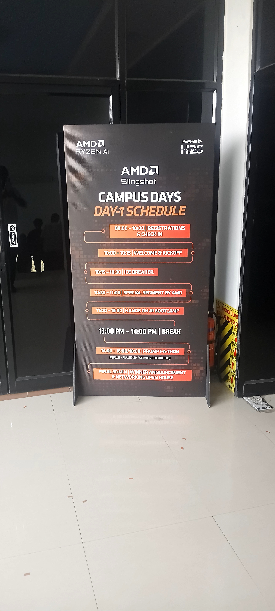

Introduction: A Day of Innovation and Hands-On Learning
The AMD Slingshot Campus Day at St. Joseph College of Engineering was an exceptional opportunity to engage with industry leaders and cutting-edge technologies. What made this event particularly valuable was not just the exposure to AMD's latest innovations, but the hands-on experience in building real applications using modern cloud infrastructure and no-code development platforms.
In an era where technology evolves rapidly, events like these bridge the gap between academic learning and practical industry experience. This day reinforced that understanding technology means building with it, not just learning about it in isolation.
AMD's Latest Innovations: AI at the Forefront
The morning sessions provided valuable insights into AMD's strategic focus on artificial intelligence and machine learning capabilities. The presentations highlighted how AMD is positioning itself as a critical player in the AI hardware space, moving beyond traditional computing to accelerate AI workloads at scale.
What was particularly interesting was the discussion around how modern AI applications require not just powerful processors, but efficient architectures that balance performance with energy consumption. The emphasis on RISC-V architectures and heterogeneous computing showed how hardware design is evolving to meet the demands of contemporary machine learning and data processing.
The sessions also covered AMD's commitment to supporting developers through open ecosystems and accessible tools. This philosophy resonated with me because it emphasizes democratizing access to powerful computing resources, which is essential for innovation at all scales.
Google Antigravity: No-Code Development Meets Full Capability
The afternoon shifted focus to a practical hands-on session exploring Google Antigravity, a no-code backend platform that abstracts the complexity of building scalable applications. For developers coming from traditional programming backgrounds, seeing how much functionality could be achieved without writing extensive backend code was eye-opening.
Antigravity allows developers to design databases, workflows, and APIs through visual interfaces, dramatically reducing development time. What impressed me most was how this approach doesn't sacrifice power—it merely changes where that power is applied. Developers can focus on business logic and user experience rather than boilerplate infrastructure.
The E-Commerce Ideathon Challenge
The ideathon task was straightforward yet challenging: build a functional e-commerce application using Antigravity and deploy it on Google Cloud services via CLI. This exercise demonstrated a complete development workflow from conceptualization to deployment.
- Database Design: We quickly modeled product catalogs, user profiles, and order management using Antigravity's visual tools
- API Creation: Building REST APIs for cart management, product search, and checkout—all without traditional backend coding
- Cloud Deployment: Using Google Cloud CLI to deploy and manage our application in production environments
- Testing & Iteration: Rapid testing cycles that revealed how no-code platforms enable quick pivots and improvements
The Power of Collaborative Problem-Solving
What made the ideathon truly valuable was the collaborative atmosphere. Teams consisted of students with varying levels of experience, from those familiar with cloud services to complete beginners. This diversity forced us to communicate clearly and leverage each team member's strengths.
I witnessed how effective teamwork could accelerate learning. Experienced team members guided newer developers through Google Cloud CLI basics, while others focused on designing the Antigravity workflows. This distribution of effort meant everyone stayed engaged and learned something different.
The experience reinforced an important lesson: in today's technology landscape, knowing how to use tools effectively often matters more than knowing how to build them from scratch. This doesn't diminish deep technical knowledge—it complements it.
Practical Learning vs. Theory: Closing the Gap
Academic education provides foundational knowledge—algorithms, data structures, system design principles. But there's a significant gap between understanding these concepts and applying them to real-world problems with production constraints and time pressure.
Events like the AMD Campus Day are invaluable because they bridge this gap. In a few hours, we went from learning about a new platform to building and deploying a functional application. This practical experience creates mental models that classroom learning alone cannot.
The ideathon format—with its time constraints and real deployment requirements—mirrors the pressure and decision-making patterns of real product development. You can't overthink every decision; you have to make informed choices and iterate. This mindset is something that can only be learned through doing.
Key Takeaways
AI Hardware is Evolving Rapidly
Efficient, specialized architectures for AI workloads are becoming essential. AMD's direction shows the industry recognizes that general-purpose computing must evolve.
No-Code Platforms Enable Rapid Development
Tools like Antigravity lower barriers to building scalable applications, allowing developers to focus on features and user experience rather than infrastructure complexity.
Cloud-Native Development is Standard
Deployment and cloud familiarity are now fundamental skills. Understanding CLI tools, containerization, and cloud services is as important as knowing a programming language.
Team Diversity Accelerates Learning
Working with people at different skill levels creates teaching and learning opportunities. Diversity in perspective leads to better solutions and holistic understanding.
Practical Experience Matters
Building something real under time pressure teaches more than theory alone. The combination of challenge and collaboration creates lasting learning.
Personal Reflection: The Shift from Theory to Practice
This event shifted how I think about skill development. I've spent considerable time learning programming languages, algorithms, and system design principles. But seeing how much functionality can be achieved with the right tools made me realize that knowing what tools exist and how to leverage them is equally important as deep technical knowledge.
The AMD Campus Day wasn't just about learning new technologies—it was about understanding how the industry is evolving. The emphasis on no-code platforms, AI acceleration, and cloud-native development paints a picture of a future where developers need to be system thinkers rather than code specialists.
I'm taking this lesson forward: build widely, understand deeply, but don't get lost in implementation details when the market offers better tools. Pragmatism and adaptability matter more than ideological purity.
Event Highlights - Photo Gallery
Experience the atmosphere and energy from the AMD Slingshot Campus Day. These images capture the presentations, team collaboration, and the hands-on ideathon sessions.
Moving Forward: Continuous Learning in a Changing Landscape
The AMD Campus Day reinforced that staying relevant in technology requires a mindset of continuous learning and openness to new tools and paradigms. The developers who will thrive in the next decade won't be those who memorize frameworks—they'll be those who understand fundamental principles and can adapt rapidly to new tools and platforms.
I'm grateful to AMD Slingshot for organizing such a well-structured and impactful event. The combination of industry insights, hands-on experience, and collaborative problem-solving made it an invaluable part of my professional development. Events like these remind me why I'm passionate about technology—not just as a career, but as a means to build meaningful solutions.